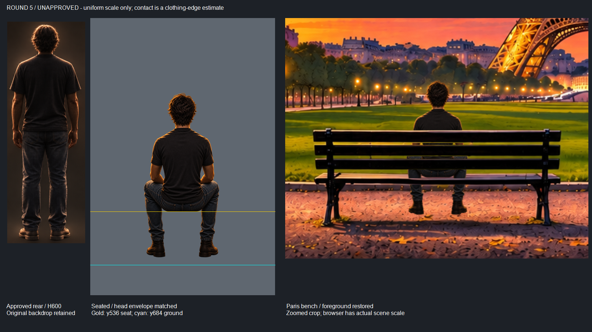

Unapproved preview. No lifecycle or animation integration. Hip placement uses the visible jeans underside, not a verified anatomical support point.
Loading preview…
Uncheck “Fit viewport” for 1 scene pixel per CSS pixel. X/Y are scene coordinates; scale is uniform around hip (256,536). Cyan: seat y812. Green: ground y881. Red: clothing-contact estimate and projected sole level. Scale adjustments are temporary.
Left and centre use H600 reference scale. The master retains its original opaque backdrop. The right panel is a magnified scene crop.

Full scene composite · Registration measurements · Report